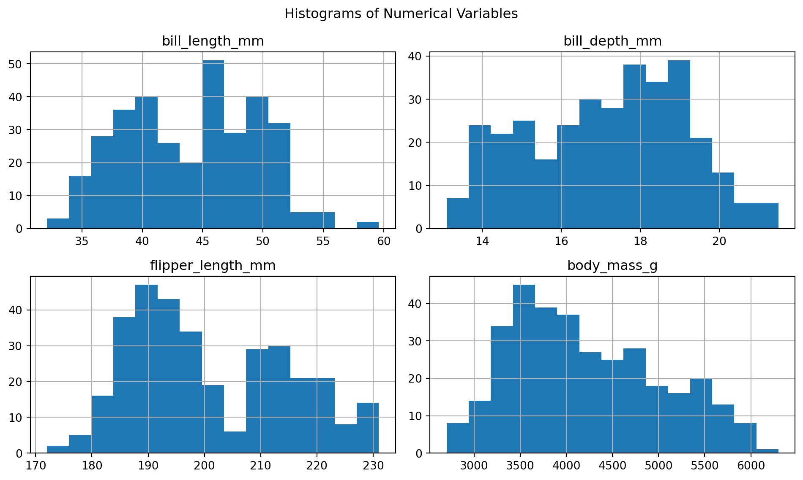
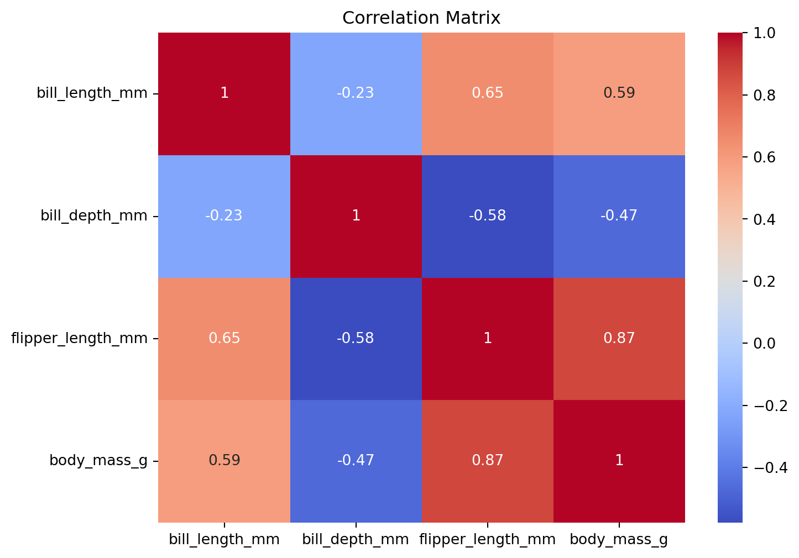
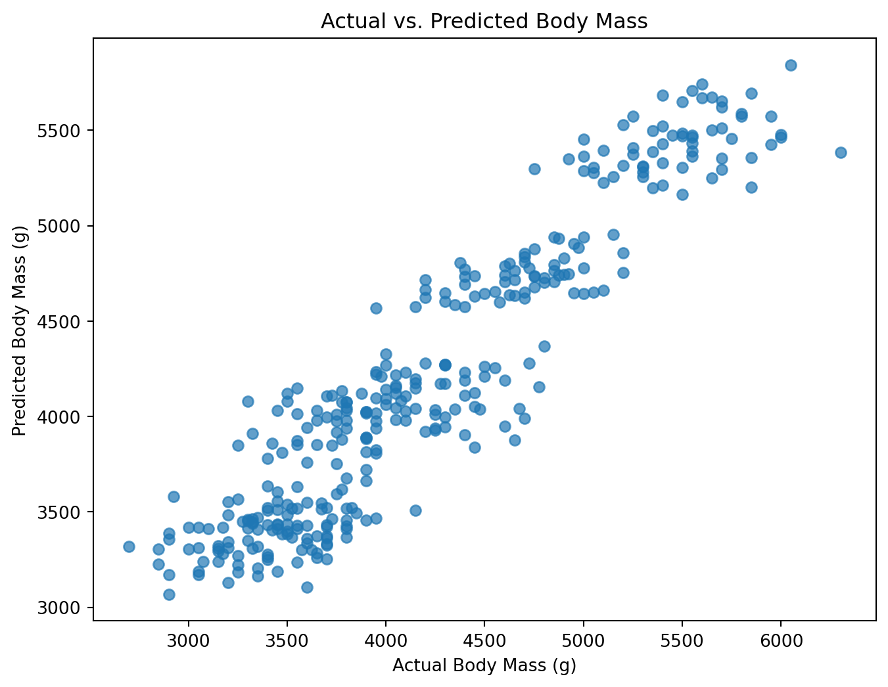
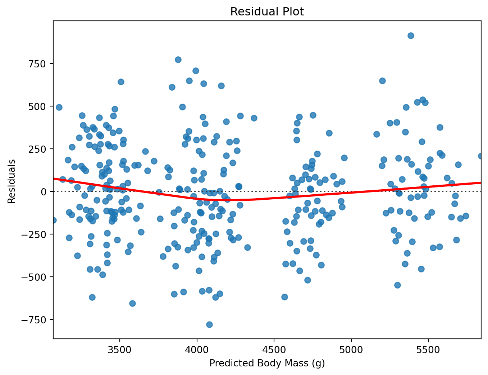

# run inside google colab
#!git clone https://github.com/cca-cce/osm-cda.gitdataframe manipulation
- dataframe examples pandas
- dataframe examples polars
- download jupyter notebook
read and explore data
Here is an analysis of your code, separated into logical steps with each step in its own code chunk, followed by explanations:
1. Import necessary libraries
import seaborn as sns
import pandas as pdExplanation:
This step imports the required libraries for the script. seaborn is a data visualization library that provides built-in datasets, and pandas is used for data manipulation and analysis. Importing these libraries allows the script to use their functions, such as loading a dataset and manipulating DataFrames.
2. Load the dataset and select specific columns
df = sns.load_dataset("penguins")
df_selected = df[['body_mass_g', 'bill_length_mm', 'bill_depth_mm', 'flipper_length_mm', 'island']]Explanation:
Here, the penguins dataset from Seaborn is loaded into a Pandas DataFrame (df). The next step selects specific columns of interest (body_mass_g, bill_length_mm, bill_depth_mm, flipper_length_mm, and island) and stores them in df_selected. These columns represent both the dependent and independent variables used for further analysis.
3. Rename selected columns for easier reference
df_renamed = df_selected.rename(columns={
'body_mass_g': 'dep_var',
'bill_length_mm': 'indep_var_1',
'bill_depth_mm': 'indep_var_2',
'flipper_length_mm': 'indep_var_3',
'island': 'indep_var_4'
})Explanation:
This step renames the columns of df_selected to more generic names for easier reference. The dependent variable (body_mass_g) is renamed to dep_var, and the independent variables are renamed to indep_var_1, indep_var_2, indep_var_3, and indep_var_4 (for island). This renamed DataFrame (df_renamed) is used for subsequent analysis.
4. Save the renamed DataFrame as a TSV file
output_file_path = '/home/sol-nhl/rnd/d/quarto/osm-cda/csv/data.tsv'
df_renamed.to_csv(output_file_path, sep='\t', index=False)Explanation:
The renamed DataFrame is saved to a TSV (tab-separated values) file at the specified path. The to_csv() method is used with the sep='\t' argument to ensure that the file is saved in TSV format. The index=False option prevents the DataFrame index from being written to the file.
5. Generate summary statistics of the DataFrame
summary_stats = df_renamed.describe()Explanation:
This step generates summary statistics for all numeric columns in the DataFrame using the describe() function. The resulting DataFrame (summary_stats) contains descriptive statistics such as count, mean, standard deviation, minimum, and maximum values, as well as the quartile ranges for the selected variables.
6. Retrieve the first five records of the DataFrame
first_five_records = df_renamed.head()Explanation:
The head() function retrieves the first five rows of the DataFrame. This is useful for a quick inspection of the dataset to verify that the data was loaded and renamed correctly. The first_five_records DataFrame contains the first five records of the renamed DataFrame.
7. Convert a column to a categorical data type
df_renamed['indep_var_4'] = df_renamed['indep_var_4'].astype('category')Explanation:
This step converts the indep_var_4 column (formerly island) to a categorical data type using astype('category'). Categorical data types are more memory efficient and appropriate when dealing with a limited number of distinct values, such as categorical variables in a dataset.
8. Fill missing values in numeric columns with their mean
df_filled = df_renamed.fillna(df_renamed.mean(numeric_only=True))Explanation:
In this step, any missing values in the numeric columns of df_renamed are filled with the mean value of each column using fillna(). The mean(numeric_only=True) calculates the mean for only numeric columns, and fillna() replaces the missing values with these means. The modified DataFrame is stored as df_filled.
9. Remove rows with any remaining missing values
df_no_missing = df_filled.dropna()Explanation:
Here, the dropna() function is used to remove any rows that still contain missing values in the DataFrame after filling the numeric columns. Rows with missing values in non-numeric columns will be dropped. The cleaned DataFrame is stored as df_no_missing.
10. Remove duplicate records
df_no_duplicates = df_no_missing.drop_duplicates()Explanation:
This step removes any duplicate rows from the DataFrame using the drop_duplicates() method. Duplicate rows are those where all column values are identical. The resulting DataFrame (df_no_duplicates) contains only unique rows, ensuring there are no duplicate records in the dataset.
11. Output summary statistics and first five records
print(summary_stats)
print(first_five_records) dep_var indep_var_1 indep_var_2 indep_var_3
count 342.000000 342.000000 342.000000 342.000000
mean 4201.754386 43.921930 17.151170 200.915205
std 801.954536 5.459584 1.974793 14.061714
min 2700.000000 32.100000 13.100000 172.000000
25% 3550.000000 39.225000 15.600000 190.000000
50% 4050.000000 44.450000 17.300000 197.000000
75% 4750.000000 48.500000 18.700000 213.000000
max 6300.000000 59.600000 21.500000 231.000000
dep_var indep_var_1 indep_var_2 indep_var_3 indep_var_4
0 3750.0 39.1 18.7 181.0 Torgersen
1 3800.0 39.5 17.4 186.0 Torgersen
2 3250.0 40.3 18.0 195.0 Torgersen
3 NaN NaN NaN NaN Torgersen
4 3450.0 36.7 19.3 193.0 TorgersenExplanation:
The final step prints the summary statistics generated earlier (summary_stats) and the first five records (first_five_records) of the renamed DataFrame. This provides an overview of the dataset and allows verification that the data processing steps were applied correctly.
select and group data
Here is an analysis of your Python code, separated into logical steps with each step in its own code chunk, followed by explanations:
1. Import the necessary library
import pandas as pdExplanation:
This line imports the Pandas library, a powerful Python tool for data manipulation and analysis. By importing Pandas, the script gains access to functions like reading data, filtering, grouping, and saving results.
2. Load DataFrame from TSV File
input_file_path = '/home/sol-nhl/rnd/d/quarto/osm-cda/csv/data.tsv'
df = pd.read_csv(input_file_path, sep='\t')Explanation:
This block reads a TSV (tab-separated values) file from the specified file path (input_file_path) into a Pandas DataFrame (df). The sep='\t' argument specifies that the file uses tabs as delimiters. The result is a DataFrame containing the data from the TSV file, with columns and rows ready for further manipulation.
3. Filter the Data
filtered_df = df[df['dep_var'] > 3500]Explanation:
Here, the DataFrame is filtered to include only rows where the value in the dep_var column is greater than 3500. The resulting filtered DataFrame (filtered_df) contains a subset of the original data that meets this condition.
4. Select Specific Columns
selected_columns = filtered_df[['dep_var', 'indep_var_1', 'indep_var_4']]Explanation:
In this step, a new DataFrame (selected_columns) is created by selecting only the specified columns (dep_var, indep_var_1, and indep_var_4) from the previously filtered DataFrame. This reduces the dataset to just the relevant columns needed for further analysis.
5. Group Data and Calculate the Mean
grouped_data = df.groupby('indep_var_4')['dep_var'].mean().reset_index()Explanation:
This block groups the data by the indep_var_4 column and calculates the mean of the dep_var column for each group. The result is stored in grouped_data, a DataFrame containing the unique values of indep_var_4 and their corresponding mean dep_var values. The reset_index() function ensures the grouped values are converted back into a DataFrame format.
6. Merge DataFrames
merged_df = pd.merge(df, grouped_data, on='indep_var_4', suffixes=('', '_mean'))Explanation:
This step merges the original DataFrame (df) with the grouped_data DataFrame on the indep_var_4 column. The result (merged_df) contains all original columns from df along with the mean dep_var for each group. The suffixes=('', '_mean') ensures that the new dep_var_mean column has a distinct name.
7. Calculate a New Column
merged_df['dep_var_diff'] = merged_df['dep_var'] - merged_df['dep_var_mean']Explanation:
A new column (dep_var_diff) is added to the merged_df DataFrame. This column represents the difference between the original dep_var values and the mean dep_var values for each group (from the merged dep_var_mean column). The result provides insight into how each dep_var deviates from the group mean.
8. Create a Pivot Table
pivot_table = merged_df.pivot_table(values='dep_var', index='indep_var_4', aggfunc='mean')Explanation:
This block creates a pivot table from merged_df, where indep_var_4 becomes the index, and the mean of dep_var is calculated for each value of indep_var_4. The result is stored in the pivot_table DataFrame, which aggregates the data by indep_var_4 and provides a summary of the mean dep_var.
9. Save the Pivot Table as a TSV File
output_file_path = '/home/sol-nhl/rnd/d/quarto/osm-cda/csv/data_pivot.tsv'
pivot_table.to_csv(output_file_path, sep='\t')Explanation:
In this step, the pivot_table DataFrame is saved as a TSV file to the specified path (output_file_path). The sep='\t' argument ensures that the data is saved in tab-separated format. This allows the pivot table to be stored and used for further analysis or reporting.
10. Output Results to Verify
print(filtered_df.head())
print(selected_columns.head())
print(grouped_data.head())
print(merged_df.head())
print(pivot_table) dep_var indep_var_1 indep_var_2 indep_var_3 indep_var_4
0 3750.0 39.1 18.7 181.0 Torgersen
1 3800.0 39.5 17.4 186.0 Torgersen
5 3650.0 39.3 20.6 190.0 Torgersen
6 3625.0 38.9 17.8 181.0 Torgersen
7 4675.0 39.2 19.6 195.0 Torgersen
dep_var indep_var_1 indep_var_4
0 3750.0 39.1 Torgersen
1 3800.0 39.5 Torgersen
5 3650.0 39.3 Torgersen
6 3625.0 38.9 Torgersen
7 4675.0 39.2 Torgersen
indep_var_4 dep_var
0 Biscoe 4716.017964
1 Dream 3712.903226
2 Torgersen 3706.372549
dep_var indep_var_1 indep_var_2 indep_var_3 indep_var_4 dep_var_mean \
0 3750.0 39.1 18.7 181.0 Torgersen 3706.372549
1 3800.0 39.5 17.4 186.0 Torgersen 3706.372549
2 3250.0 40.3 18.0 195.0 Torgersen 3706.372549
3 NaN NaN NaN NaN Torgersen 3706.372549
4 3450.0 36.7 19.3 193.0 Torgersen 3706.372549
dep_var_diff
0 43.627451
1 93.627451
2 -456.372549
3 NaN
4 -256.372549
dep_var
indep_var_4
Biscoe 4716.017964
Dream 3712.903226
Torgersen 3706.372549Explanation:
This final block prints the first few rows (head()) of various DataFrames, including the filtered data, selected columns, grouped data, merged data, and the pivot table. These print statements allow you to verify the results of each step in the analysis.
inferential data analysis
# Import necessary libraries
import seaborn as sns
import pandas as pd
import numpy as np
import matplotlib.pyplot as plt
import statsmodels.api as sm
import statsmodels.formula.api as smf
# Load the penguins dataset
penguins = sns.load_dataset('penguins')In this step, we import the required libraries for data manipulation and visualization. We use seaborn to load the built-in ‘penguins’ dataset into a pandas DataFrame called penguins.
# Display the first few rows to inspect the dataset
print(penguins.head())
# Check for missing values
print("\nMissing values in each column:")
print(penguins.isnull().sum()) species island bill_length_mm bill_depth_mm flipper_length_mm \
0 Adelie Torgersen 39.1 18.7 181.0
1 Adelie Torgersen 39.5 17.4 186.0
2 Adelie Torgersen 40.3 18.0 195.0
3 Adelie Torgersen NaN NaN NaN
4 Adelie Torgersen 36.7 19.3 193.0
body_mass_g sex
0 3750.0 Male
1 3800.0 Female
2 3250.0 Female
3 NaN NaN
4 3450.0 Female
Missing values in each column:
species 0
island 0
bill_length_mm 2
bill_depth_mm 2
flipper_length_mm 2
body_mass_g 2
sex 11
dtype: int64We use penguins.head() to preview the first few rows of the DataFrame, allowing us to understand the structure and contents of the data. The penguins.isnull().sum() operation checks each column for missing values by summing up the number of NaN entries, providing insight into data completeness.
# Drop rows with missing values
penguins_clean = penguins.dropna()To handle missing data, we use dropna() to remove any rows that contain NaN values. This operation results in a new DataFrame penguins_clean that contains only complete cases, ensuring the integrity of subsequent analyses.
# Descriptive statistics for numerical variables
print("\nDescriptive statistics:")
print(penguins_clean.describe())
Descriptive statistics:
bill_length_mm bill_depth_mm flipper_length_mm body_mass_g
count 333.000000 333.000000 333.000000 333.000000
mean 43.992793 17.164865 200.966967 4207.057057
std 5.468668 1.969235 14.015765 805.215802
min 32.100000 13.100000 172.000000 2700.000000
25% 39.500000 15.600000 190.000000 3550.000000
50% 44.500000 17.300000 197.000000 4050.000000
75% 48.600000 18.700000 213.000000 4775.000000
max 59.600000 21.500000 231.000000 6300.000000We generate descriptive statistics using penguins_clean.describe(), which calculates summary metrics like mean, standard deviation, and quartiles for each numerical column. This helps in understanding the distribution and central tendencies of the data.
# Histograms for numerical variables
numerical_vars = ['bill_length_mm', 'bill_depth_mm', 'flipper_length_mm', 'body_mass_g']
penguins_clean[numerical_vars].hist(bins=15, figsize=(10, 6))
plt.suptitle('Histograms of Numerical Variables')
plt.tight_layout()
plt.show()
We create histograms for numerical variables using DataFrame.hist(), which plots the frequency distribution of each variable in numerical_vars. The histograms help visualize the distribution shape, skewness, and potential outliers in the data.
# Boxplots to detect outliers
plt.figure(figsize=(12, 8))
for i, var in enumerate(numerical_vars, 1):
plt.subplot(2, 2, i)
sns.boxplot(y=penguins_clean[var])
plt.title(f'Boxplot of {var}')
plt.tight_layout()
plt.show()
To detect outliers, we use sns.boxplot() for each numerical variable, plotting them in a grid layout. Boxplots display the median, quartiles, and potential outliers as individual points, making it easier to identify anomalies in the data.
# Identify outliers using the IQR method
Q1 = penguins_clean[numerical_vars].quantile(0.25)
Q3 = penguins_clean[numerical_vars].quantile(0.75)
IQR = Q3 - Q1
outlier_condition = ((penguins_clean[numerical_vars] < (Q1 - 1.5 * IQR)) | (penguins_clean[numerical_vars] > (Q3 + 1.5 * IQR))).any(axis=1)
# Remove outliers
penguins_no_outliers = penguins_clean[~outlier_condition]We calculate the Interquartile Range (IQR) for each numerical variable to identify outliers using the 1.5 * IQR rule. The condition outlier_condition flags rows with outliers, and we create a new DataFrame penguins_no_outliers by excluding these rows, thus cleaning the dataset.
# Compare dataset sizes before and after removing outliers
print("\nDataset size before removing outliers:", penguins_clean.shape)
print("Dataset size after removing outliers:", penguins_no_outliers.shape)
Dataset size before removing outliers: (333, 7)
Dataset size after removing outliers: (333, 7)We use DataFrame.shape to compare the number of rows and columns before and after outlier removal. This helps assess the impact of outlier elimination on the dataset size.
# Correlation matrix
numerical_cols = penguins_no_outliers.select_dtypes(include=[np.number]).columns
corr_matrix = penguins_no_outliers[numerical_cols].corr()
print("\nCorrelation matrix:")
print(corr_matrix)
Correlation matrix:
bill_length_mm bill_depth_mm flipper_length_mm \
bill_length_mm 1.000000 -0.228626 0.653096
bill_depth_mm -0.228626 1.000000 -0.577792
flipper_length_mm 0.653096 -0.577792 1.000000
body_mass_g 0.589451 -0.472016 0.872979
body_mass_g
bill_length_mm 0.589451
bill_depth_mm -0.472016
flipper_length_mm 0.872979
body_mass_g 1.000000 We compute the correlation matrix using DataFrame.corr(), which calculates pairwise correlation coefficients between numerical variables. This identifies the strength and direction of linear relationships between variables.
# Visualize the correlation matrix
plt.figure(figsize=(8, 6))
sns.heatmap(corr_matrix, annot=True, cmap='coolwarm')
plt.title('Correlation Matrix')
plt.show()
We visualize the correlation matrix using sns.heatmap(), which creates a color-coded matrix where each cell represents the correlation coefficient between variables. The annot=True parameter displays the numerical values within the cells for precise interpretation.
# Select variables with the highest correlation to body_mass_g
print("\nCorrelation with body_mass_g:")
print(corr_matrix['body_mass_g'].sort_values(ascending=False))
Correlation with body_mass_g:
body_mass_g 1.000000
flipper_length_mm 0.872979
bill_length_mm 0.589451
bill_depth_mm -0.472016
Name: body_mass_g, dtype: float64We extract the correlation coefficients of all variables with body_mass_g by accessing the corresponding column in the correlation matrix. Sorting these values helps identify which variables have the strongest linear relationship with body mass.
# Prepare data for regression
# Encode categorical variables
penguins_encoded = pd.get_dummies(penguins_no_outliers, drop_first=True)We use pd.get_dummies() to encode categorical variables into numerical format suitable for regression analysis. The drop_first=True parameter avoids multicollinearity by removing the first category in each encoded variable.
# Prepare data for regression
# Encode categorical variables
penguins_encoded = pd.get_dummies(penguins_no_outliers, drop_first=True)
# Define dependent and independent variables
X = penguins_encoded.drop(['body_mass_g'], axis=1)
y = penguins_encoded['body_mass_g']
# Add a constant to the independent variables
X = sm.add_constant(X)We define the independent variables X by dropping the target variable body_mass_g and the year column from the encoded DataFrame. The dependent variable y is set as body_mass_g. We add a constant term to X using sm.add_constant() to include the intercept in the regression model.
# Prepare data for regression
# Encode categorical variables
penguins_encoded = pd.get_dummies(penguins_no_outliers, drop_first=True)
# Define dependent and independent variables
X = penguins_encoded.drop(['body_mass_g'], axis=1)
y = penguins_encoded['body_mass_g']
# Convert boolean columns to int64
bool_cols = X.select_dtypes(include=['bool']).columns
X[bool_cols] = X[bool_cols].astype(int)
# Now check data types
print("Data types of X after converting bools to int:")
print(X.dtypes)
# Add a constant to the independent variables
X = sm.add_constant(X)
# Fit the multiple linear regression model
model = sm.OLS(y, X).fit()
# Print the model summary
print("\nRegression Model Summary:")
print(model.summary())Data types of X after converting bools to int:
bill_length_mm float64
bill_depth_mm float64
flipper_length_mm float64
species_Chinstrap int64
species_Gentoo int64
island_Dream int64
island_Torgersen int64
sex_Male int64
dtype: object
Regression Model Summary:
OLS Regression Results
==============================================================================
Dep. Variable: body_mass_g R-squared: 0.875
Model: OLS Adj. R-squared: 0.872
Method: Least Squares F-statistic: 284.1
Date: Wed, 18 Sep 2024 Prob (F-statistic): 1.85e-141
Time: 08:47:19 Log-Likelihood: -2353.6
No. Observations: 333 AIC: 4725.
Df Residuals: 324 BIC: 4760.
Df Model: 8
Covariance Type: nonrobust
=====================================================================================
coef std err t P>|t| [0.025 0.975]
-------------------------------------------------------------------------------------
const -1500.0291 575.822 -2.605 0.010 -2632.852 -367.207
bill_length_mm 18.1893 7.136 2.549 0.011 4.150 32.229
bill_depth_mm 67.5754 19.821 3.409 0.001 28.581 106.570
flipper_length_mm 16.2385 2.939 5.524 0.000 10.456 22.021
species_Chinstrap -260.3063 88.551 -2.940 0.004 -434.513 -86.100
species_Gentoo 987.7614 137.238 7.197 0.000 717.771 1257.752
island_Dream -13.1031 58.541 -0.224 0.823 -128.271 102.065
island_Torgersen -48.0636 60.922 -0.789 0.431 -167.915 71.788
sex_Male 387.2243 48.138 8.044 0.000 292.521 481.927
==============================================================================
Omnibus: 1.114 Durbin-Watson: 2.167
Prob(Omnibus): 0.573 Jarque-Bera (JB): 1.101
Skew: 0.139 Prob(JB): 0.577
Kurtosis: 2.958 Cond. No. 7.59e+03
==============================================================================
Notes:
[1] Standard Errors assume that the covariance matrix of the errors is correctly specified.
[2] The condition number is large, 7.59e+03. This might indicate that there are
strong multicollinearity or other numerical problems.We fit a multiple linear regression model using sm.OLS() from the statsmodels library and call .fit() to train the model. The model.summary() function provides a comprehensive summary of the regression results, including coefficients, p-values, and goodness-of-fit metrics.
# Plot actual vs. predicted body mass
plt.figure(figsize=(8, 6))
plt.scatter(y, model.predict(X), alpha=0.7)
plt.xlabel('Actual Body Mass (g)')
plt.ylabel('Predicted Body Mass (g)')
plt.title('Actual vs. Predicted Body Mass')
plt.show()
We create a scatter plot to compare the actual and predicted body mass values using plt.scatter(). This visualization helps assess how well the model predictions align with the actual data, indicating the model’s predictive performance.
# Residual plot to check for homoscedasticity
plt.figure(figsize=(8, 6))
sns.residplot(x=model.predict(X), y=model.resid, lowess=True, line_kws={'color': 'red'})
plt.xlabel('Predicted Body Mass (g)')
plt.ylabel('Residuals')
plt.title('Residual Plot')
plt.show()
We generate a residual plot using sns.residplot() to examine the homoscedasticity (constant variance) of residuals. The plot displays residuals against predicted values, and a red lowess line indicates any systematic patterns, which helps in diagnosing model assumptions.